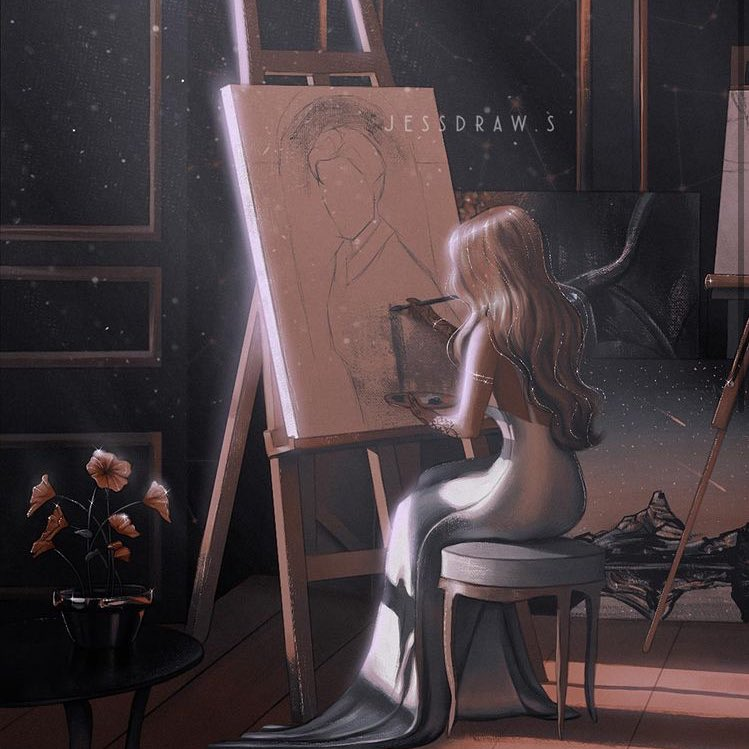
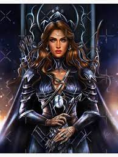
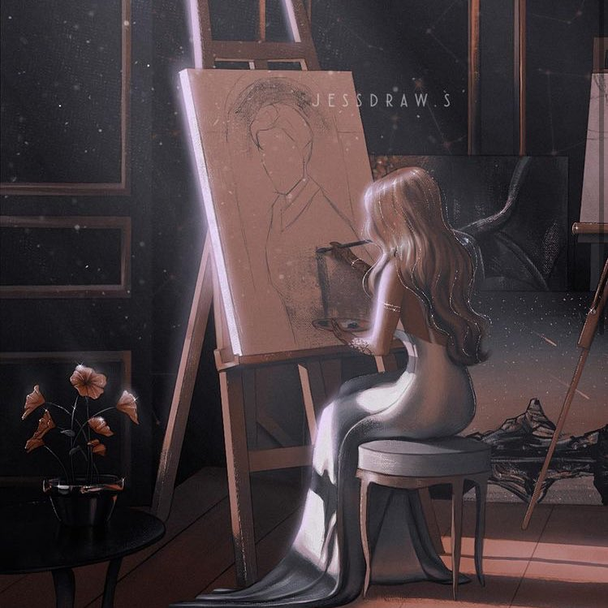
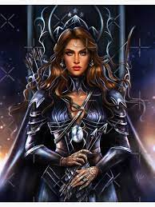

- SUA HISTÓRIA DE VIDAS
- HISTÓRIA ACADEMICA E PROFISSIONAL
- PAIXOES E INTERESSES
- VIDA PESSOAL
- PODER E PINTURA
A família dela era rica. Seu pai era chamado de "Príncipe dos Mercadores" e sua mãe era negligente com suas filhas, preocupada apenas com seu status e planejamento de festas. Sua mãe morreu de tifo quando ela tinha oito anos, mas não antes de fazer Feyre prometer que cuidaria da família. Quando tinha nove anos, seu pai depositou todo o seu dinheiro em um negócio de mercadorias a alto mar e perdeu todos os seus navios. Ele se endividou e foi caçado e agredido por aqueles que devia.Agora vivendo na pobreza, Feyre se torna a única provedora de renda da família, apesar de ser a mais nova.
Muito jovem para ler, antes de sua família perder a fortuna, Feyre cresce analfabeta, e sem o treinamento de classe alta que suas irmãs tiveram. Após o falimento de seu pai foram forçados a se mudar de sua casa para uma aldeia não descrita,seu pai e suas irmãs deixaram todas as tarefas domésticas e ganha pão para Feyre.
Feyre sempre teve interesse em pintar, mas como suas irmãs se apossavam de qualquer dinheiro que Feyre trazia para casa, ela tinha pouco tempo ou recursos para comprar tintas e treinar.
Era originalmente uma mortal, mas foi ressuscitada como Grã-Feérica pelos sete Grão-Senhores após sua morte Sob a Montanha.Feyre retorna para Velaris, governando a Corte Noturna como Grã-Senhora junto com Rhysand, seu parceiro, marido, e Grão-Senhor da Corte Noturna.Feyre tem um relacionamento tenso com seu pai.A jovem também tem um relacionamento complicado com sua irmã mais velha Nestha. Feyre acha que Nesta (sua irmã mais velha) nasceu com um sorriso de escárnio no rosto e as duas brigam com frequência. No entanto Feyre ainda ama sua irmã. ja sua irmã do meio,Elain, Feyre tem uma relação melhor. Feyre faz os gostos de Elain e compra sempre que pode, sementes para o jardim de flores que ela cuida nos meses mais amenos.
Ela foi transformada em uma Grão-Feérica, ganhando assim o físico dos Grão-Senhores, força e velocidade, seus sentidos mais agudos e sua imortalidade. Feyre também herdou uma fração de todos os sete poderes dos Grão-Senhores e, como resultado, ela é capaz de rastrear objetos escondidos através desse poder e usar essas habilidades juntas. Feyre é capaz de atravessar de um lugar para outro.Seus poderes são (Metamorfose, Manipulação do fogo, ar, gelo, escuridão e água, Habilidades de cura e Habilidades Daemati).Feyre também é uma artista perspicaz, embora, após os eventos de Sob a Montanha, ela não conseguisse pintar.
Se stiver mais curioso sobre, visite esses sites aposto que vc vai gostar!
site sobre o livrosite sobre Ela
GALERIA DE IMAGENS
 



CONTATO
Entre em contato com nosso suporte
Envie um email pra nós!Mais informações